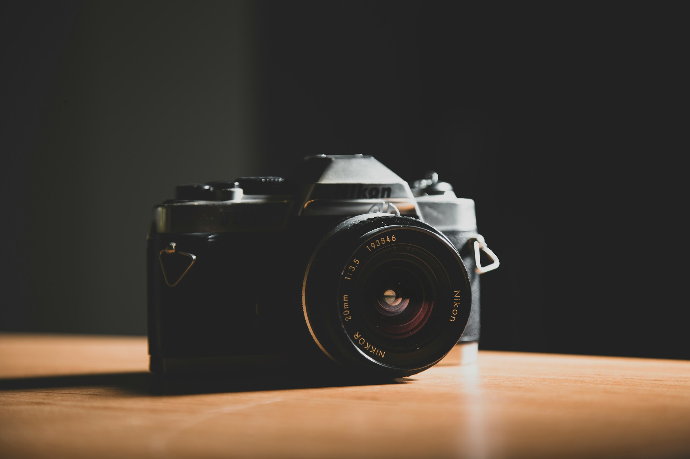

My Journey Into Photography
Photography was never something I planned to pursue.
Growing up, photography was already a familiar part of my life. I was surrounded by it, but despite being around cameras and photographs, I never really saw myself becoming a photographer. At the time, it was simply something other people did. I had other interests, other plans, and honestly, photography wasn't something I was particularly interested in.
Then, somewhere along the way, things changed.
I picked up a camera not because I had a clear vision of becoming a professional photographer, but simply because I wanted to try something different. What started as curiosity slowly became something more. I began paying attention to light, composition, colours, expressions, and the little details that can completely change the way a moment feels.
The more I photographed, the more I wanted to learn.
I started experimenting, making mistakes, studying my work, trying again, and gradually developing my own eye. I discovered that photography wasn't just about taking pictures. It was about seeing things differently. It was about turning ordinary moments into something worth remembering.
That realization changed everything.
Today, photography is more than just pressing a shutter for me. It is a craft I continue to learn, improve, and grow through. Every person I photograph gives me a new story to tell, and every session gives me another opportunity to create something meaningful.
Looking back, it is almost ironic that I once had no interest in photography. What I never expected to become a part of my life has become a passion I genuinely enjoy pursuing.
I am still learning. I am still growing. And I am still discovering what I can create through my lens.
**I’m Shakur, and this is my journey behind the camera.**
2+
Years Experience
50+
Projects Shot